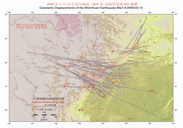

The Wenchuan earthquake is a significant seismic event within the continental interior. Although geological surveys have identified surface rupture zones and co-seismic displacements along the Yingxiu-Beichuan Fault and the Guanxian-Jiangyou Fault, they fail to provide co-seismic displacement fields beyond the surface rupture zone. The images of regional and far-field deformation caused by earthquakes are essential for understanding the kinematic nature of seismic faulting and determining future seismic trends. Immediately after the earthquake, the China Earthquake Administration, in collaboration with the National Administration of Surveying, Mapping, and Geoinformation, conducted re-surveys of the "China Crustal Movement Observation Network" regional GPS stations centered on the seismic zone. Subsequently, the Wenchuan Earthquake Scientific Expedition Team, in collaboration with the Sichuan Provincial Administration of Surveying, Mapping, and Geoinformation, conducted re-surveys of the GPS control network in Sichuan Province, obtaining valuable co-seismic displacement fields (see figure).
The co-seismic horizontal displacement field of the Wenchuan earthquake is characterized by significant opposite movements and crustal shortening centered on the Yingxiu-Beichuan Fault in the Longmenshan Fault Zone. All stations west of the fault move eastward, while those to the east move westward, creating intense horizontal thrust shortening in the crust along the Longmenshan Fault Zone. Additionally, in the northern (Beichuan-Qingchuan segment) and southern segments (south of the surface rupture zone) of the Longmenshan Fault Zone, besides opposite thrust shortening, there is also a clear indication of right-lateral strike-slip.
The Beichuan-Yingxiu surface rupture zone is the main surface rupture zone of the Wenchuan earthquake, starting from Maoliu Village (103.36656°, 30.94472°) near Wenchuan County Yingxiu Town in the west and extending to the vicinity of Donghekou in Hongguang Township, Beichuan County (32.40572°N, 105.11081°E) in the east. It exhibits features such as N50°E-trending ground fissures and N70°E-trending, 50cm-high thrust uplift, close to the starting rupture point or epicenter determined by the China Seismological Network and the United States Geological Survey (USGS). The overall strike of the surface rupture zone is N42°±5°E, with a length of approximately 240 ± 5 km. The motion along the surface rupture zone is characterized by right-lateral strike-slip reverse faults, divided into the Hongkou-Qingping segment dominated by thrust overthrust and the Beichuan-Shiba segment with both right-lateral strike-slip and thrust motion components. The Hongkou-Qingping segment is 118 km long, with a maximum vertical displacement of 6.2 ± 0.5 m and an average vertical displacement between 3~4m. The Beichuan-Shiba segment is approximately 122 km long, with a maximum vertical displacement of 9.0 ± 0.5 m (another opinion suggests only 6.5 ± 0.5 m), a maximum right-lateral strike-slip displacement of 4.9 ± 0.2 m, and average vertical and right-lateral strike-slip displacements of 2~3m.
Relative to stable far-field regions (such as the Eurasian Plate), the eastward horizontal displacement amplitude on the eastern edge of the Qinghai-Tibet Plateau is greater than the westward horizontal displacement amplitude in the Sichuan Basin. In other words, co-seismic horizontal displacement attenuates more slowly to the west at the same distance from the Yingxiu-Beichuan Fault, and more rapidly to the east.
Vertical co-seismic displacements are distributed on both sides of the Longmenshan Fault Zone, with a narrower spatial range than the distribution of horizontal crustal shortening. The Chengdu Plain, located in the lower part of the fault zone, experiences predominant subsidence. The maximum subsidence near the fault is approximately 0.67m, rapidly decreasing to nearly zero near Neijiang to the east. On the west side of the fault, GPS observation points are relatively sparse. At an observation point 14 km from the fault, an uplift displacement of 0.30m is observed, while at two points 20 km from the fault, subsidence displacements of 0.23m and 0.08m are still observed.
